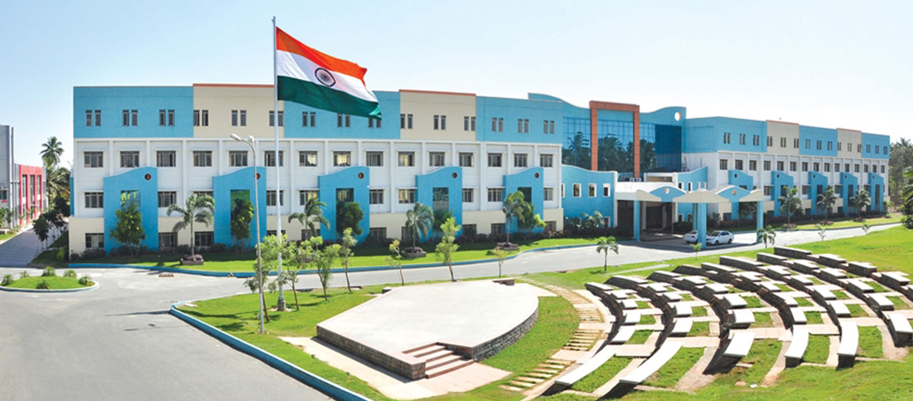

SRI ESHWAR COLLEGE OF ENGINEERING
Leadership and excellence

HOME PAGE
DEPARTMENTS
Sri Eshwar College of Engineering is an
Autonomous Institution, Approved by AICTE, New Delhi and Affiliated to Anna University, Chennai
The Eshwar trust was founded with a mission to redefine the system of education;
it is a professionally managed, multidisciplinary and multi-faceted oasis.
Recognizing the need for high quality education in the field of engineering and technology,
Sri Eshwar College of Engineering was established in the year 2008.
With the view to provide holistic approach to education,
the institution endeavours with a single minded focus to impart quality education.